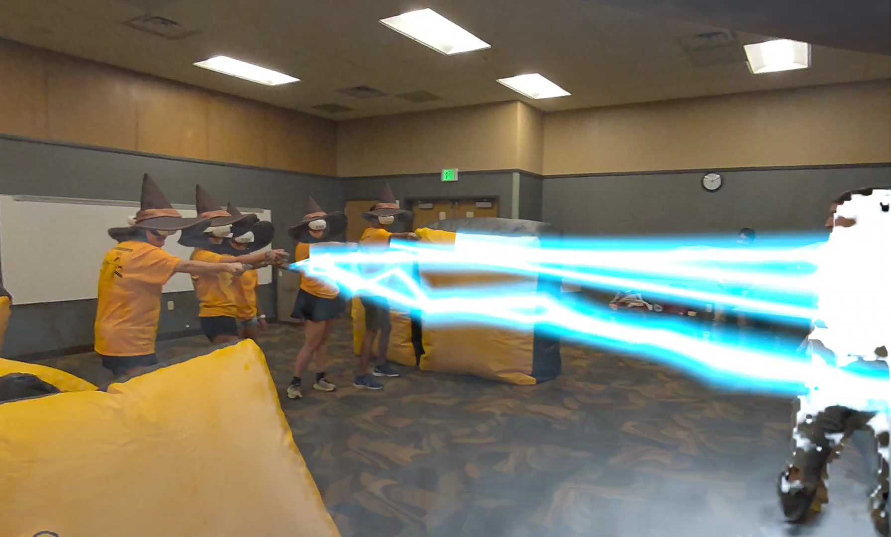
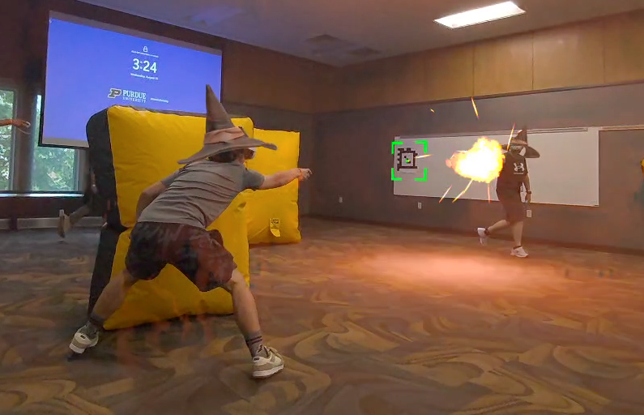

Wizardtag
Magic dueling 101 for incoming university freshmen


This game is a fork of the Lasertag project created specifically for Purdue University's student orientation event. It brings all the same tech, including live environment scanning and environment lighting effects, but swaps out the laser guns for voice-controlled magic wands.
This isn't ready for public use (relying on a desktop operator program and fiducial marker setup), but I'll eventually merge the wand weapon back into the main game.
Features
Players yell one of three spells − fireball, lightning, or shield − and compete to score the most eliminations against the opposing team in two minutes.
For spell speech recognition, I used Vosk ➔, an on-device speech recognition model. While Vosk isn't as responsive as a bespoke wake-word model might be, latency is still low enough for spells to feel suitably responsive.
For instant and consistent spatial alignment, I used AprilTags. Each headset finds the best fit between its own noisy tag readings and corresponding known correct poses, spatially anchoring virtual elements like respawn points and aligning each player's coordinate space.
For my purposes, this was faster and more robust than using Meta's spatial anchors, which sometimes fail to localize and are prone to drift over time.
Help from friends

Friends and I themed the event as a magic dueling class as part of a fictional Harry-Potter-esque wizarding school version of Purdue. I commissioned a friend (Keith) to draw this poster, and another (Alex) played the role of a wizard professor giving a 'lecture' on spell casting and magic dueling.
While I did everything on the developement side, the event itself would not have been a success without Alex, Keith, Andres, & Paige. Thank you guys so much for the hours you spent making this possible!
Credits & Acknowledgements
The wizard hat model comes from Kateryna Babych ➔ on Sketchfab.
Purdue University's Fusion Studio ➔ generously funded this project with a grant as part of their student orientation Entertainment Challenge ➔. Boiler Up!
Inspired by Mage Arena ➔ and Wand Duel ➔. Check em out!